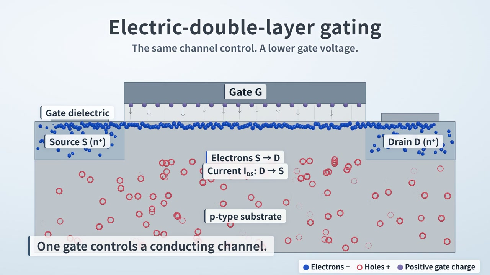
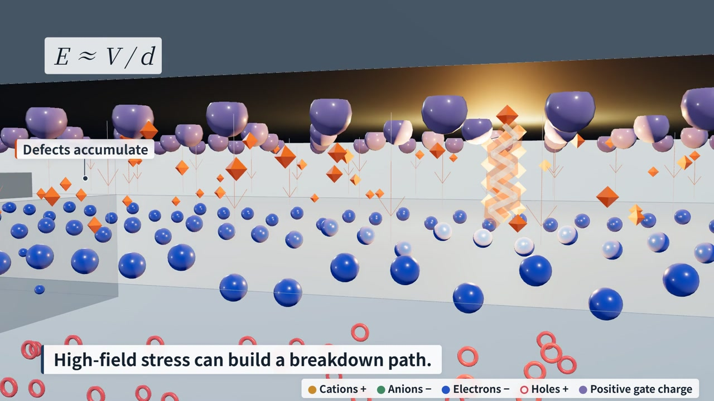

An AI-Assisted Workflow for Creating Scientific Animations
From scientific concepts to animated explanations. Finished films, editable source, and the decisions that connect them.
- 01
Frame the science
Define the mechanism, the audience, and the limits.
- 02
Direct and review
Develop the visual brief. Judge concrete frames and sequences.
- 03
Render and share
Connect scene, sound, and time. Keep the work editable.
Electric-double-layer gating
The same change in channel charge.
A lower gate voltage. Why?
A continuous journey from a transistor cross-section into a three-dimensional device and its microscopic interface. The comparison connects effective gate capacitance to the voltage needed for a common target charge.
The choices behind the images

Give the comparison a clear meaning
Compare the voltage needed for the same change in charge. Keep low external voltage distinct from weak local fields, and gate-related stress distinct from source–drain failure.
Scientific scope →
Turn review into specific changes
Move beyond “make it better.” Review color separation, occlusion, materials, reading time, and the continuity of motion. Each revision should answer an observable problem.
Creative inputs and review →
Keep scene, sound, and time connected
The EDL case uses time-driven Three.js scenes, readable DOM text, event-based sound synthesis, and frame-by-frame browser capture. Source and instructions make the result open to modification.
Production workflow →